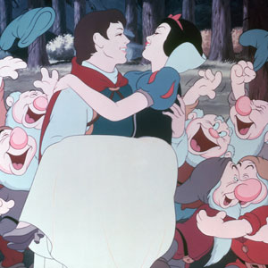

Disney has been creating some of the best content for kids and adults for decades. I've grown up watching these movies and have loved every single one of them. The stories have provided themes for people of all ages with a splash of tons of music and a bit of magic!
History
Walt Disney arrived in California in the summer of 1923 with a lot of hopes but little else. He had made a cartoon in Kansas City about a little girl in a cartoon world, called Alice’s Wonderland, and he decided that he could use it as his “pilot” film to sell a series of these “Alice Comedies” to a distributor. Soon after arriving in California, he was successful. A distributor in New York, M. J. Winkler, contracted to distribute the Alice Comedies on October 16, 1923, and this date became the start of the Disney company. Originally known as the Disney Brothers Cartoon Studio, with Walt Disney and his brother, Roy, as equal partners, the company soon changed its name, at Roy’s suggestion, to the Walt Disney Studio.
After acheiving brief success with cartoon shows and merchandise, one night in 1934, Walt informed his animators that they were going to make an animated feature film, and then he told them the story of Snow White and the Seven Dwarfs. There were some skeptics in the group, but before long everyone had caught Walt’s enthusiasm, and work began in earnest. It took three years, but the landmark film debuted on December 21, 1937 and became a spectacular hit. Snow White soon became the highest-grossing film of all time, a record it held until it was surpassed by Gone with the Wind.
Since then Disney has been a part of everyone's childhood and many of us have gron up enjoying and watching these movies. Out of the many Disnay movies out there that I have come to love, these are some of my favourite movies so far that have represented strong, independent women from different cultures and had been even now an inspiration for many young girls and adults!